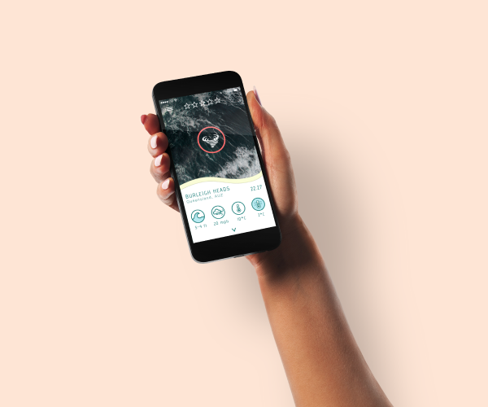
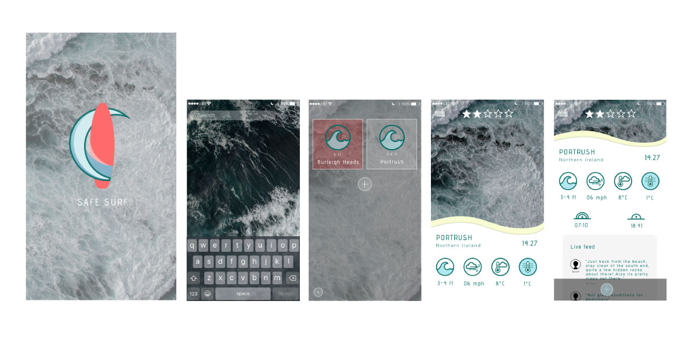
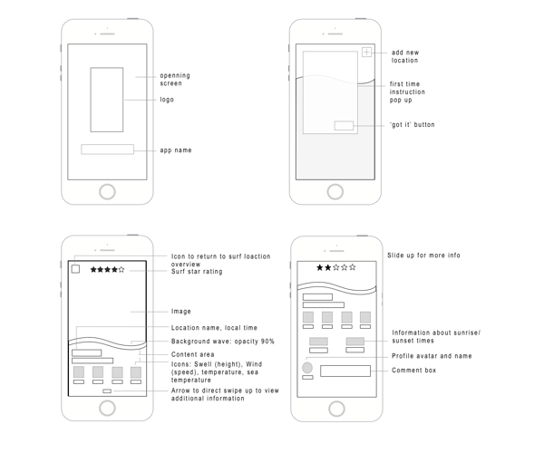
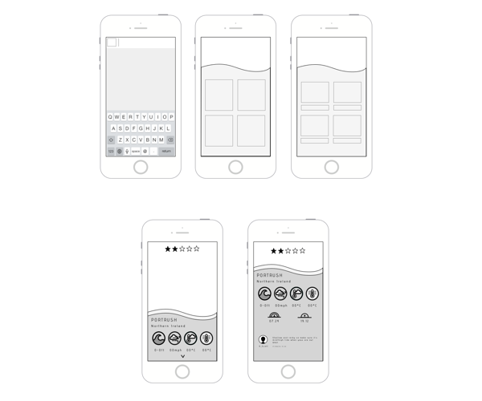
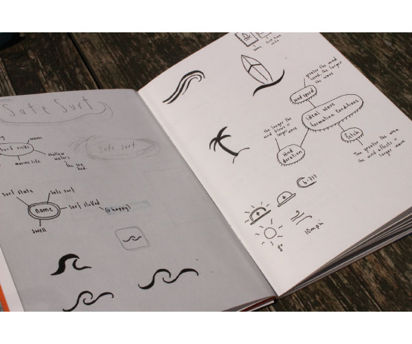
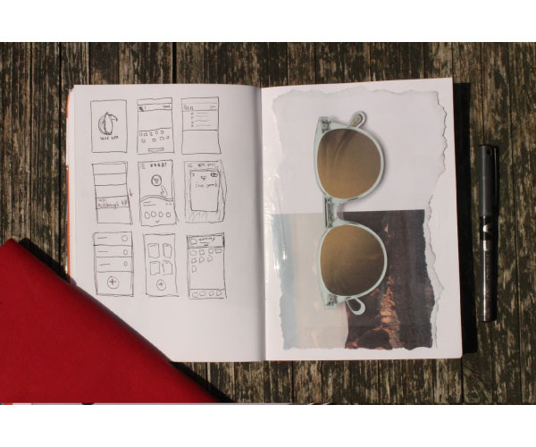
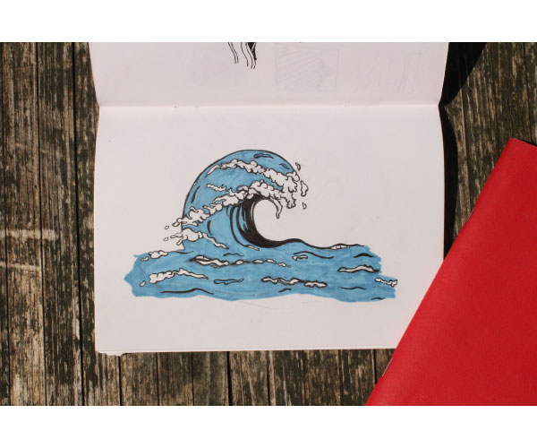

Safe Surf
An app that allows you to search your desired beach to see the surf report.
Overview
This project was created as part of the IXD303 module Designing User Experiences. For this projet we were tasked to create a weather related app, using weather data that can be gathered using an API.

Prototypes of various screens from the app
Research
Here I am continuing to discuss the project by going into greater detail. Ideally this paragraph should be a bit longer than this. However, I’m simply making it up at the moment, so for now this will have to suffice.
The main objectives for this project were:
- Objective one
- Objective two
- Objective three
Process
Throughout the process I tested the best ways in which the user could navigate through the application.

Wireframes

Wireframes

Initial sketches

Initial sketches

Initial Sketches
Final Prototype
Features of this app include saving loactions to your favourites for instant access to the information without repeated searches
The app creates a profile for you and provides opportunity to make comments about surf locations; this feature means that you can warn and be warned of any hazards there may be.